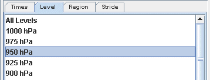
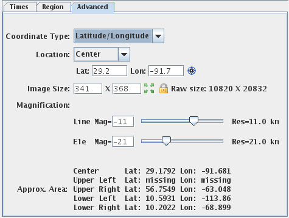

Data Subset
The Data Subset panel contains tabs for subsetting Times, Levels, Region, and Stride. These tabs may be different depending on the type of data.
The Times tab allows for selecting which times will be used in the display, as well as for matching or setting a time driver:
 Image 1: Times Tab of the Subset Panel in the Field Selector
Image 1: Times Tab of the Subset Panel in the Field SelectorThere are four different modes when selecting what times of data to display:
- Use Default - Selects all times included with the data source.
- Use Selected - Allows for selection of individual times to display with Ctrl+click or Shift+click. Alternatively, subset the times by right-clicking in the panel and selecting 'Select every N'th time'.
- Match Time Driver - Selects times that match the time driver, assuming one has been set. For more information on Match Time Driver, see Time Matching.
- Sets As Time Driver - Sets the times being displayed as the time driver. For more information on Set As Time Driver, see Time Matching.
The Level tab allows for subsetting levels for 3D grids. This sets the level in the atmosphere that will be used to plot the data in the Main Display window:

Image 2: Level of the Subset Panel in the Field Selector
For images, optionally subset the spatial area to be displayed. Use the
Region tab to left-click and drag to select a geographical region to display. In the Main Display window, the display will be centered around your box and no data will be plotted outside of it. Note that before subsetting a region, you may have to uncheck the Use Default checkbox:
 Image 3: Region of the Subset Panel in the Field Selector
Image 3: Region of the Subset Panel in the Field SelectorUse the Advanced tab to further refine the data selection and refer back to the Region tab to view the image you've selected:

Image 4: Advanced Tab of the Subset Panel in the Field Selector
Properties
The image properties in the Advanced tab allow for overriding the default properties McIDAS-V uses to specify aspects of the image data. The widgets show the defaults McIDAS-V will use. Changing any of the widgets can override the default value.
- Coordinate Type - Changes the coordinate type used to specify the data location.
- Latitude/Longitude Coordinates - Specifies Latitude and Longitude values of the image to be used by the Location field. Note that McIDAS-V cannot read latitude and longitude values for loops of polar data where the navigation changes. If displaying a loop of polar data, Image Coordinates should be used to ensure the images will be displayed.
- Image Coordinates - Specifies the line and element values of the image itself to be used by the Location field. The upper left point is specified by (1,1) and each pixel in the image has its own, unique pair.
- Area Coordinates - Specifies the area coordinate of the image to be used by the Location field. This is based off the size of the area and referenced in terms of line/element. The upper left point is specified by (0,0) and each pixel has its own, unique pair.
- Location - Specifies the placement point of the image at either the center or the upper left.
- Lat/Lon - Specifies the location of the image with respect to latitude and longitude. Note that if Image or Area Coordinates is selected in the Coordinate Type field, these fields will be Line/Element.
- Line/Element - Specifies the location of the image with respect to line and element.
- Center Display - Centers the image over the center, upper left, upper right, lower left, or lower right latitude and longitude coordinates of the of the current main display.
- Image Size - Changes the size of the image.
- Lock Image Size - Changes size automatically when changing magnification when unlocked.
- Full Resolution - Sets the image size to the full resolution size of the image.
- Raw Size - Lists the full size of the image on the server.
- Magnification - Changes the magnification of the image, or manually type the Line and Ele magnification in the Mag= fields.
- Res - Lists the approximate resolution of the image, if displayed with the current Image Properties.
- Approx. Area - Lists the center, upper left, upper right, lower left, and lower right coordinates of the selected image, if displayed with the current Image Properties.
Use the Data Sampling tab to change the number of points used to create the image. Fewer points along the X and Y-axes will display the data faster, but with less precision. It is recommended to leave the X and Y values as their default (all points) unless a general picture and nothing too specific is the overall goal.
Use the Settings tab to utilize any display settings that may have been set.
The Subsetting component of the Field Selector allows for subsetting the data in both time and space (if possible). If there are times in the data source they will be shown in this area. Likewise, if it is possible to do spatial subsetting or decimation. a Spatial Subset tab will be shown.
Time and spatial subsetting defaults can be applied to the data source itself through the Data Source Properties dialog or the defaults can be overwritten through the Field Selector tab.